Мы сравнили LeoPPM, украинскую PPM-систему на Microsoft Power Platform, с нашим порталом PPM на SharePoint Online. В документе собраны функции, которые стоит перенести к нам: что именно добавить, зачем, кому это поможет и как это ложится в нашу архитектуру. Для каждого пункта есть скриншоты обеих систем.
Источник материалов LeoPPM — открытая страница leoppm.com (раздел «Можливості», галерея «Відео-презентація рішення»), просмотр 06.11.2026. Скриншоты LeoPPM © LEO Consulting, приведены для внутреннего анализа; документ не для публикации. Скриншоты PPM — прототип с демо-данными и тестовый сайт.
Главное. LeoPPM шире по охвату: стратегия, заявки, портфели, программы, ресурсы, Гант, финансы, интеграции. Наш портал глубже в управлении статусом: показатели проекта меняются только через статус-отчёт, PMO его согласует, сохраняется эталон ключевых полей и история с причинами, есть помощник ИИ, права выдаются по оргструктуре. Поэтому LeoPPM копировать не нужно. Стоит взять то, чего у нас нет на входе в портфель (заявки, связь со стратегией), внутри проекта (вехи, стейкхолдеры) и на выходе из него (уроки).
| # | Что добавить | Зачем | Кому полезно | Объём* | Приоритет |
|---|---|---|---|---|---|
| 1 | Контрольные точки (вехи) в карточке и статус-отчёте | Прогресс виден по фактическим результатам, а не только по % | PM, PMO, руководители | 4–6 дн. | Сначала |
| 2 | Шкала стадий вверху карточки, со сроком в стадии | За секунду понятно, где проект и сколько он в текущей стадии | Все | 1–2 дн. | Сначала |
| 3 | Запросы на проект с критериями отбора и решением PMO | Прозрачный вход в портфель, отбор по единым правилам | Инициаторы, PMO, руководство | 8–12 дн. | После решения |
| 4 | Стратегические цели: значения и связь с проектами | Видно, какие проекты работают на какую цель | CEO, руководство, PMO | 6–9 дн. | После решения |
| 5 | Матрица стейкхолдеров (влияние × интерес, поддержка) | Подсказывает PM, с кем как работать | PM, руководители | 2–4 дн. | Сначала |
| 6 | Извлечённые уроки при закрытии проекта | Опыт не теряется, новые проекты учатся на прошлых | PMO, PM новых проектов | 3–4 дн. | Сначала |
| 7 | Пороги оценки сроков (как сейчас для бюджета) | Одинаковые оценки «Терміни» у всех PM | PM, PMO | 1–2 дн. | Сначала |
| 8 | Финансы по месяцам: план, бюджет, факт | Видно, когда тратятся деньги, а не только итог | Финансы, PMO, CEO | 10–15 дн. | Позже, с R5 |
| 9 | Новый проект на основе существующего | PMO быстрее заводит типовые проекты | PMO | 1 дн. | Сначала |
* Объём — дни работы Claude как основного исполнителя (код, тесты, документация на трёх языках, сборка, выкладка на тест). Отдельно, по календарю: решения владельца, приёмка фокус-группой (обычно 1–2 недели на выпуск).
Рекомендация. Выпуск 1.8: пункты 2, 7, 9, 5 и 6. Это быстрые улучшения в текущей модели данных, без новых процессов. Выпуск 1.9: вехи (пункт 1), самый ценный для PMO и руководства. Запросы (пункт 3) и цели (пункт 4) брать после решения владельца о процессе: кто подаёт заявки и ведёт ли компания формализованные цели с числовыми показателями. Финансы по месяцам (пункт 8) объединить с R5 дорожной карты («план, прогноз и факт раздельно»).
Каждое предложение построено одинаково: как это сделано в LeoPPM → что есть у нас сейчас → что добавить → зачем и кому → как это ложится в нашу архитектуру (списки SharePoint, синхронизация, приложение) → объём и вопросы. Мы соблюдаем правила портала: ключевые показатели меняются только через статус-отчёт; права выдаёт синхронизация; новые поля и списки только добавляются, данные не теряются; значения хранятся на украинском и переводятся на три языка.
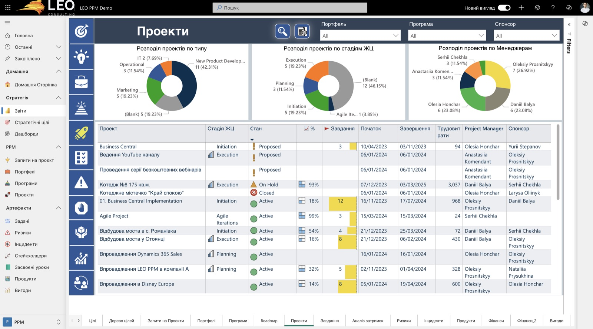
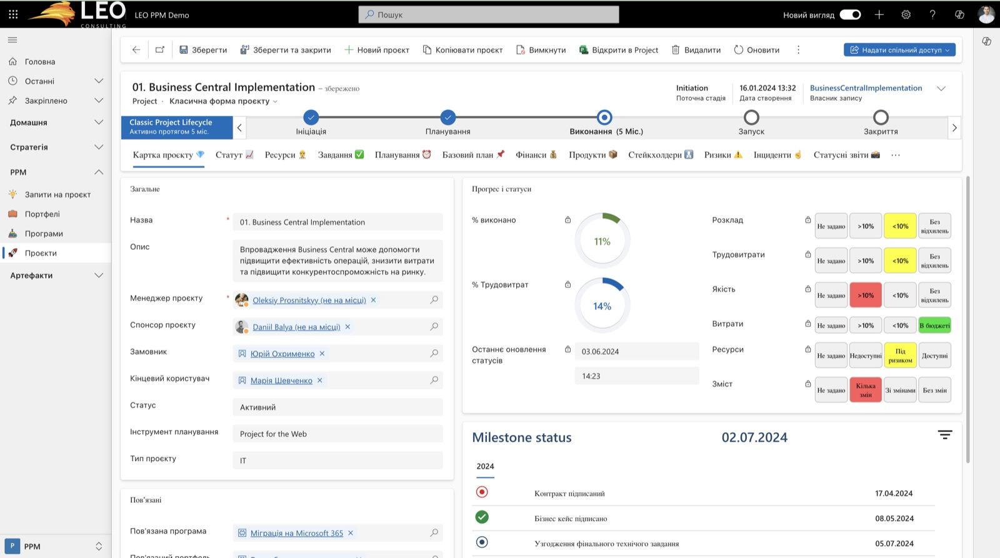
Эти функции переносить не нужно, у нас они есть, и часто проработаны лучше. Это важно для разговора о «покупке против своей разработки»: базовый процесс PPM у нас уже закрыт.
| Возможность | LeoPPM | PPM (наш портал) |
|---|---|---|
| Статус-отчёт | Вкладка «Статусні звіти», оценки по порогам | Отчёт — единственный способ изменить ключевые показатели. Общее состояние считается как худшая из трёх оценок, причина изменения обязательна, есть план прошлого периода и «не сделано из плана» |
| Согласование PMO | Не видно на скриншотах | В карточку попадает только согласованный отчёт. PMO меняет оценки с комментарием или возвращает отчёт; эталон откатывает правки в обход отчёта |
| Риски | Матрица влияние × вероятность, стратегия реагирования | То же самое (5×5, оценка P×I, стратегия) плюс карта рисков портфеля на главной и проверка помощником ИИ, что высокие риски упомянуты в отчёте |
| История изменений | «Централизованное управление изменениями с фиксацией истории» | Журнал «было → стало» с причиной и автором, события согласования, назначений и подачи отчётов |
| Доступ | Роли Dataverse | Автоматически по оргструктуре Entra ID: PM, его руководители, собственник, команда, CEO страны. В карточке видно «кто видит проект» |
| Аналитика портфеля | Power BI (отдельная лицензия) | Встроена на главной: состояние, динамика за 12 недель, карта рисков, сдвиги сроков, запуски, запросы решений руководства |
| Помощник ИИ | Нет | Черновик отчёта и проверка противоречий (пилот, Copilot Studio) |
| Стоимость владения | Лицензии Project Plan и Power BI, договор поддержки | Только Microsoft 365 и Azure Automation, развитие — своими силами |
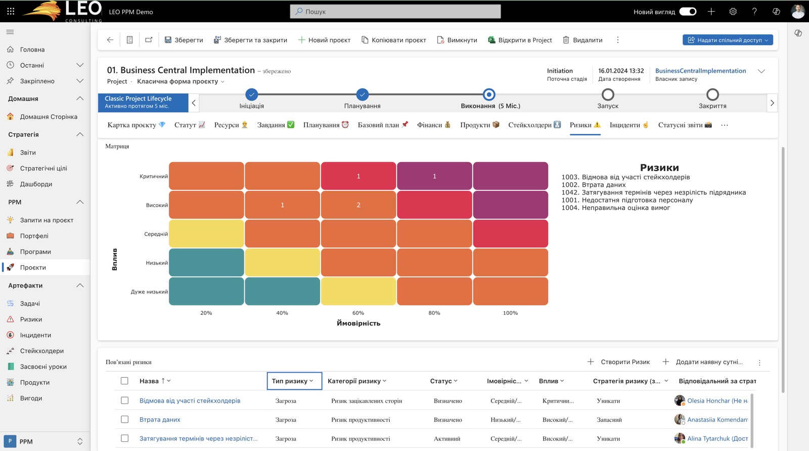
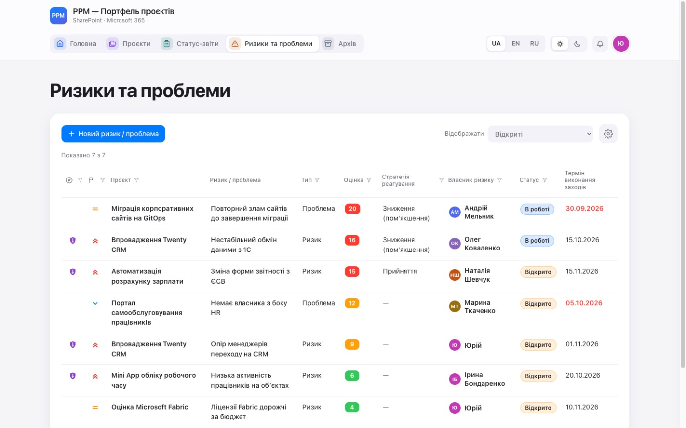
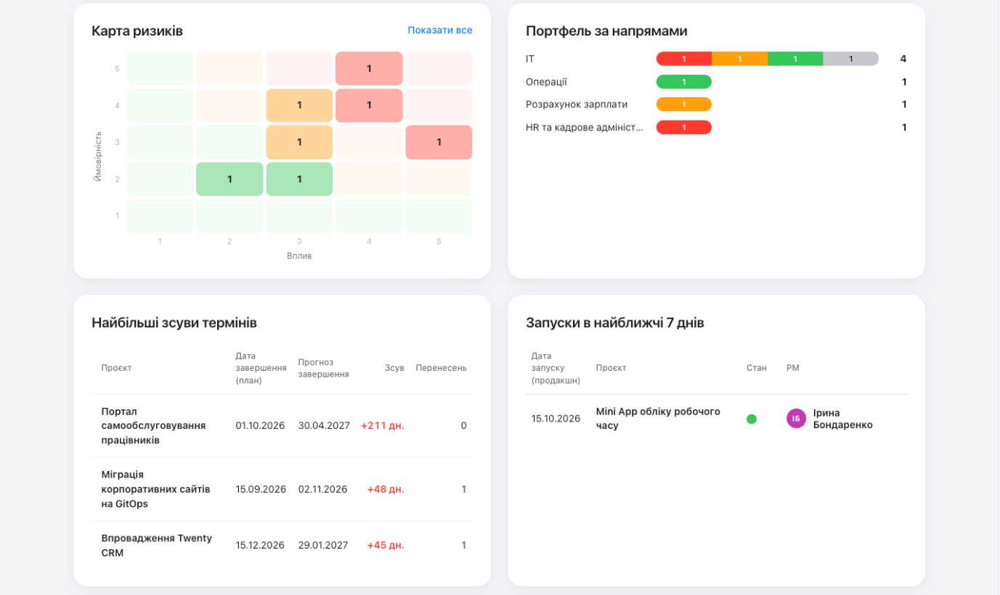
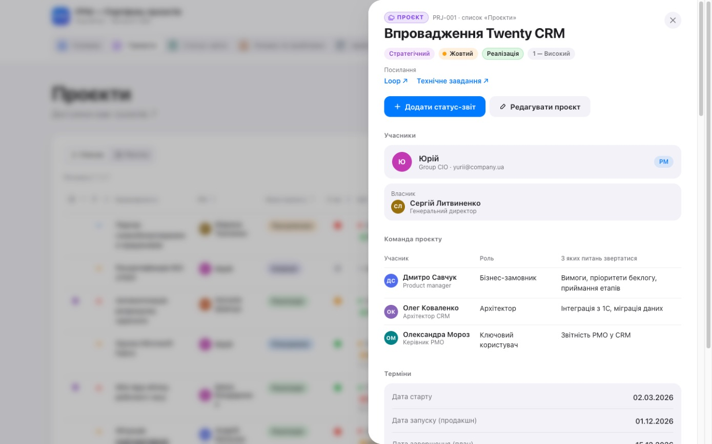
Процент выполнения — субъективная оценка PM. Вехи показывают проверяемые результаты: «договор подписан», «ТЗ согласовано». У руководителя появляется ответ на вопрос «что конкретно должно было случиться и случилось ли». В отчёте PMO видит пропущенную веху ещё до того, как сдвинется дата завершения.
PMO — раннее предупреждение и предмет разговора с PM. Руководители и CEO — понятный язык результатов. PM — структура плана и аргумент при переносе сроков.
Lists/Milestones (поля msProject, msPlan, msActual, msStatus, msOwner), записи в папках P<ID>, права наследуются от проекта.tests/cases/milestones.json для синхронизации, приложения и прототипа.Вопрос владельцу: вехи вводит PM свободно или из шаблона по типу проекта? Рекомендация — свободно, шаблоны позже.
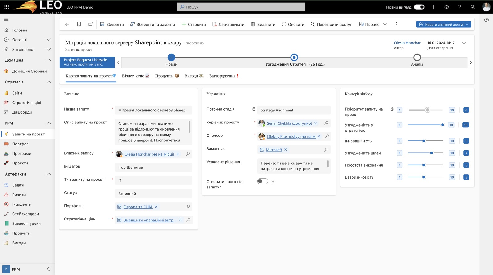
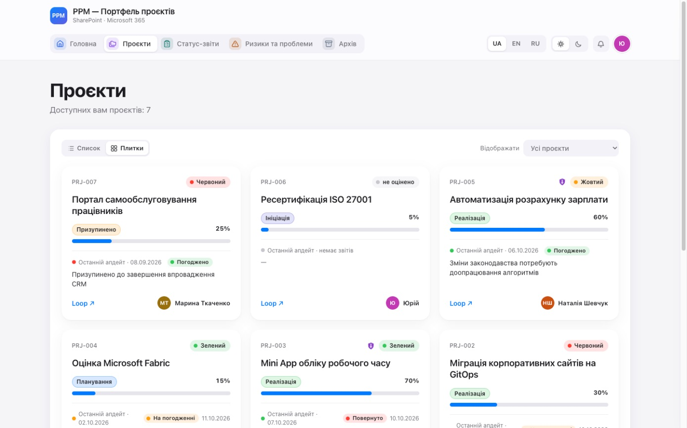
Под заголовком карточки — горизонтальная шкала наших фаз: Ініціація → Планування → Реалізація → Завершено. Пройденные отмечены галочкой, текущая подсвечена, под ней «в фазе 5 міс.». «Призупинено» и «Скасовано» — отдельная метка поверх шкалы. При наведении на пройденную фазу видны даты входа и выхода.
Всем, кто открывает карточку, — мгновенная ориентация. PMO видит «застрявшие» проекты: «в Ініціації 7 месяцев» — повод для разговора. Данные уже есть в журнале «Зміни показників» (смены статуса), новых полей не нужно.
Только приложение и прототип: чистая функция logic/phaseTrack.ts по журналу, векторы в Jest и тест прототипа в jsdom. Синхронизацию и модель данных не трогаем. На телефоне шкала сворачивается до «Фаза 2 из 4 · 5 міс.».
PPM сейчас: проект создаёт только PMO («Новий проєкт»). Идея до этого момента живёт в письмах и разговорах, критериев отбора и истории отклонённых идей нет.
Отбор проектов по единым правилам и сравнение идей между собой, а не «кто громче». Видна очередь на вход в портфель, отклонённые идеи с причиной не возвращаются по кругу.
Инициаторы (руководители направлений) — понятный путь «как запустить проект» и статус своей заявки. PMO — входящий поток в одном месте и аргументы для отбора. Руководство — рейтинг кандидатов на проектный комитет.
Lists/ProjectRequests и Lists/RequestDecisions (решение — отдельной записью PMO, как «Погодження звітів»). Права: автор видит свой запрос, PMO — все.Вопросы владельцу: кто может подавать запросы (все сотрудники или руководители направлений)? Какие критерии и веса? Нужен ли этап «Бізнес-кейс» до решения?
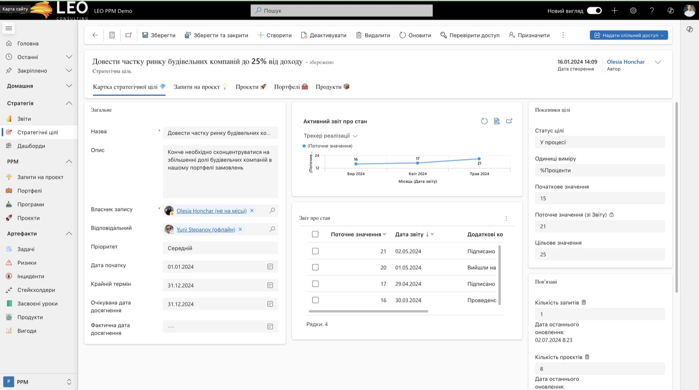
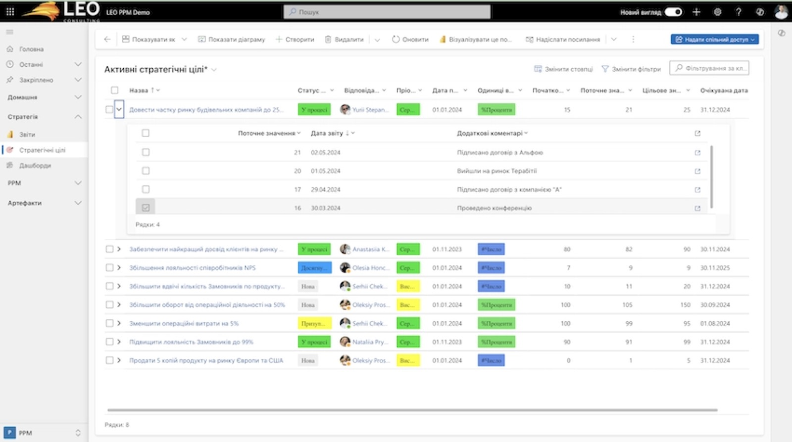
PPM сейчас: есть только признак «Стратегічний» (тип проекта) и щит в списках. Связать проект с конкретной целью компании нельзя.
CEO и руководство видят, на что тратится проектный ресурс и подкреплена ли каждая цель проектами. PMO получает критерий для отбора запросов (пункт 3) и аргумент для приостановки проектов «без цели». Пользователи LeoPPM (Велмарт) называют связь проектов со стратегией главной причиной внедрения.
Справочник по образцу «Назви країн / Країни» (1.7.11): пишет приложение от имени PMO, читают все. pmGoal — lookup, ключевое поле эталона. Метрика проекта не трогается.
Вопрос владельцу: есть ли у компании утверждённые цели с числовыми показателями? Если нет, начать с простого справочника целей без значений: только связь и группировка.
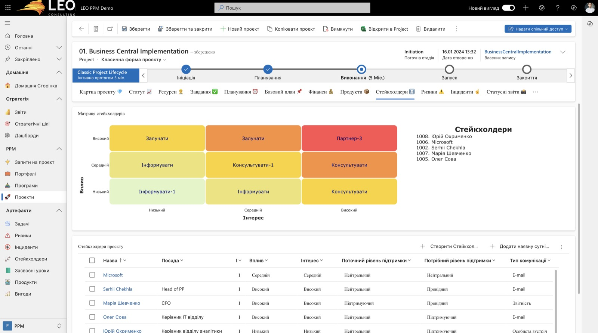
PM — простой инструмент работы со стейкхолдерами, которого сейчас нет. Руководители PM видят, где проекту нужна их помощь («финдиректор против — нужен разговор на уровне CEO»). Изменение небольшое: поля добавляются в существующий список.
Оценка отношения людей к проекту — чувствительная информация. Предлагаем показывать её только PM, его руководителям и PMO, а не всей команде (через отдельное поле с ограниченным выводом в приложении). Вопрос владельцу.
LeoPPM: в меню «Артефакти» есть отдельный реестр «Засвоєні уроки». Скриншота нет в галерее, функция видна в меню на всех экранах (см. скриншоты выше).
PPM сейчас: проект уходит в архив через отчёт «Завершено / Скасовано». Опыт остаётся в головах и разрозненных комментариях.
PMO — база знаний компании и материал для стандартов. PM новых проектов — чужие ошибки до старта. Руководство — повторяющиеся проблемы («подрядчики срывают сроки в 4 проектах из 6»).
Список Lists/Lessons в папках проектов. Права: читают все участники портала, кто видит проекты; у архивных проектов уроки должны оставаться видимыми для PMO и PM. Уроки из отчёта переносит синхронизация при согласовании. Помощник ИИ может предлагать черновик уроков по истории проекта.
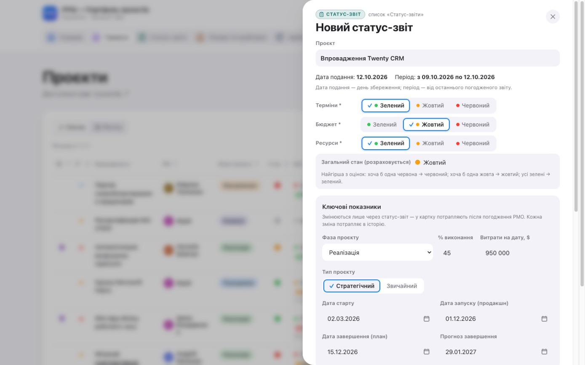
Подсказка для «Терміни» по отклонению прогноза завершения от плана, как сейчас для бюджета: например, сдвиг до 10 % длительности проекта (или до 14 дней) — жёлтый, больше — красный. Если PM ставит цвет лучше рассчитанного, форма предупреждает (сохранить не мешает), а PMO видит расхождение при согласовании.
PMO — сопоставимые оценки по всем проектам. PM — меньше споров о цвете. Руководство — «жёлтый» значит одно и то же во всех проектах. Помощник ИИ уже ловит «зелёные сроки при прогнозе позже плана»; порог делает правило явным и доступным без ИИ.
Чистая функция в logic/, общие векторы tests/cases/schedule-threshold.json (прототип и приложение), текст в «Довідці» на трёх языках. Порог утверждает PMO.
LeoPPM: кнопка «Копіювати проєкт» на панели карточки (см. скриншот карточки).
Что добавить: в форме «Новий проєкт» (только PMO) — «На основі…»: копируются тип, приоритет, направление, страна, описание как шаблон, команда (роли и вопросы), ссылки; показатели, отчёты и риски не копируются. Кому: PMO, когда заводит серию однотипных проектов (внедрения по странам, открытия объектов). Объём: около дня, только приложение.
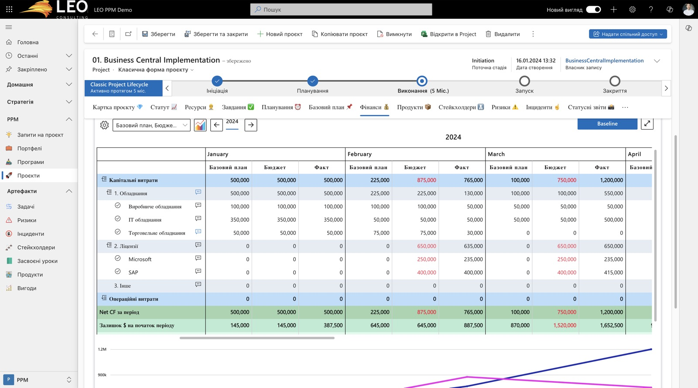
PPM сейчас: итоговые суммы проекта — бюджет (план), прогноз затрат на завершение, затраты (факт) нарастающим итогом — меняются через отчёт с причиной (с 1.7.7).
План расходов по месяцам (и, при необходимости, по 2–4 статьям) при утверждении бюджета, факт за месяц — в статус-отчёте. В карточке — график «план / прогноз / факт нарастающим итогом».
Финансы и CEO — когда понадобятся деньги (cash flow портфеля по месяцам). PMO — раннее отклонение темпа расходов, а не только итоговое.
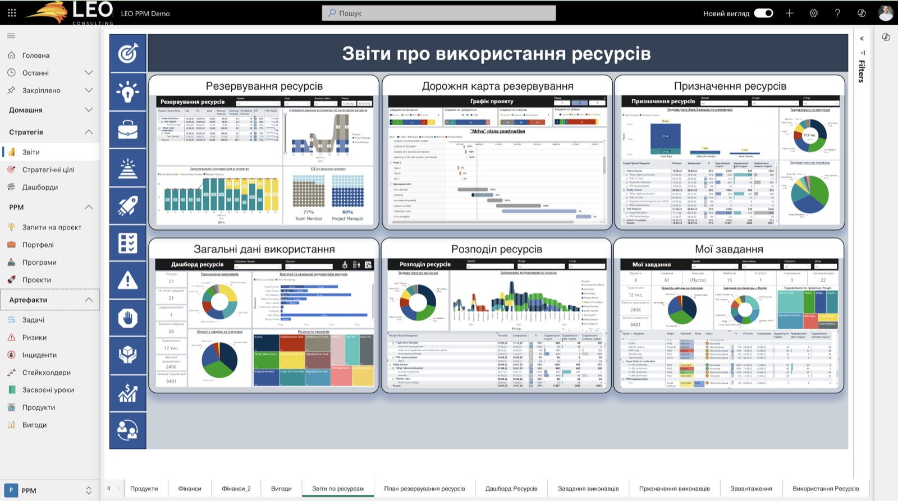
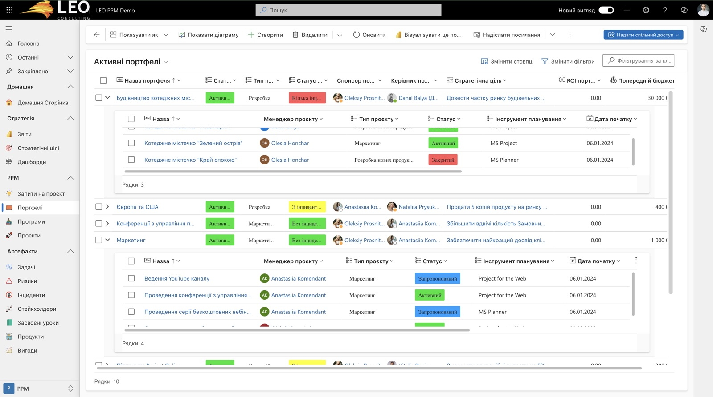
| Функция LeoPPM | Почему не переносим | Что у нас вместо |
|---|---|---|
| Гант, задачи, MS Planner | Это планирование работ внутри проекта, а наш портал — уровень портфеля. Свой Гант — месяцы работы и конкуренция с MS Project / Planner, которые PM уже используют | Ссылки на план в «Посилання» (Loop, Planner, Project); вехи (пункт 1) — уровень, нужный портфелю |
| Ресурсы и загрузка | Требуют учёта трудозатрат по задачам, которого в компании нет. Без него отчёты пустые | Оценка «Ресурси» в статус-отчёте |
| Портфели и программы как отдельные сущности | При нашем числе проектов это лишний уровень администрирования | «Батьківський проєкт» (вложенность любая), направления, страны; группировка на главной |
| Power BI | Отдельные лицензии и вторая точка входа | Встроенная аналитика на главной; при росте — R6 (Azure SQL), тогда Power BI станет естественным |
| Интеграции с MS Project Online, Jira, Azure DevOps | Нет запроса от PM; Microsoft объявила о выводе Project Online из эксплуатации | R8 (хелпдеск / Service Desk) в далёкой перспективе |
| Инциденты, продукты, вигоди | Инциденты у нас — «Проблема» в реестре рисков. Продукты и выгоды — тема для пункта 4 (цели), если он пойдёт | Реестр «Ризики та проблеми» |
| Выпуск | Состав | Работа Claude | Ожидание (календарь) | Кто помогает |
|---|---|---|---|---|
| 1.8 «Быстрые улучшения» | 2 Шкала стадий · 7 Пороги сроков · 9 На основе проекта · 5 Матрица стейкхолдеров · 6 Уроки | 8–12 дней | 1–2 недели приёмки фокус-группой | PMO: порог сроков, категории уроков; владелец: видимость оценок стейкхолдеров |
| 1.9 «Вехи» | 1 Контрольные точки (карточка, отчёт, главная) | 4–6 дней | 1–2 недели | PMO: статусы вех, нужен ли шаблон |
| 2.0 «Вход в портфель» | 4 Стратегические цели · 3 Запросы на проект | 14–20 дней | решение руководства о процессе; пилот 2–4 недели | Владелец, CEO: цели и показатели; PMO: критерии и веса |
| позже | 8 Финансы по месяцам — вместе с R5 / R6 | 10–15 дней | согласование с финансами | Финансовый директор, PMO |
Каждый выпуск идёт по порядку работы проекта: план в docs/superpowers/plans/ → ревью → одобрение владельца → ветка → тесты и общие векторы → тестовый сайт → PR → прод только по решению владельца. Выпуски не конфликтуют с R9–R12 из дорожной карты; рекомендуем вставить 1.8 после текущих R11 и R12.
Итог. LeoPPM подтверждает, что наш базовый процесс (карточка, статус-отчёт с согласованием, риски, история, права, аналитика) соответствует рыночному PPM, а местами сильнее. Главное, чего у нас нет, — связь портфеля со стратегией и управляемый вход проектов (запросы, цели), промежуточные результаты (вехи) и сохранение опыта (уроки). Пять быстрых улучшений выпуска 1.8 дают заметную пользу за 2–3 недели без изменения процессов. Вехи и вход в портфель — следующий шаг после решений владельца.